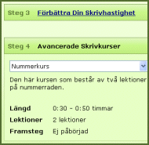

Med följande skrivkurser kan du effektivt förbättra din hastighet och bredda dina färdigheter så att de innefattar hela tangentbordet.
Förbättra Din Skrivhastighet (6 lektioner)
På denna kurs kommer du att förbättra din skrivhastighet genom att skriva längre texter och vanligt förekommande ord.

Nummerkurs (2 lektioner)
Kurs i Specialtecken (4 lektioner)
Lär dig att använda specialtecken med touch-type-metoden.
Numeriskt Tangentblock Kurs (3 lektioner)
Lär dig att använda det numeriska tangentblocket med touch-type-metoden.
Du kan påbörja vilken av dessa kurser du vill, när du har lämnat den här kursen.